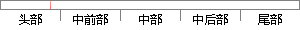

然而，Flask 支持用扩展来给应用添加这些功能。
片段位置图

相似结果|
相似片段 1：缺省情况下， Flask不包含数据库抽象层、表单验证或者其他已有的库可以处理的东西。 然而， Flask通过扩展为你的应用添加这些功能，就如同这些功能是Flask原生的一样。大量的扩展用以支持数据库
相似片段 2：的如模板引擎，其他一切靠你自定义选择。默认情况下，Flask并不会包含数据库抽象层、表单验证等其他像Django所包含的。相反的，Flask支持扩展，这些扩展能够添加功能到你的应用，像是Flask本身
相似片段 3：很简单，然而简单并不代表不实用。Flask是一个非常灵活易扩展的网络框架，虽然本身不包含数据库抽象层，表单验证等功能，但是你却可以通过扩展选择何种引擎来实现这些功能，完全满足应用系统开发的需求。Flask
|
※ 片段修改建议 ※
近似词参考：- 然而：但是
- 支持：撑持 支撑
- 扩展：扩大
- 应用：利用 运用
- 功能：功效
系统自动生成语句：但是，Flask 撑持用扩大来给利用添加这些功效。
注：本片段修改建议为系统自动生成，仅供参考。